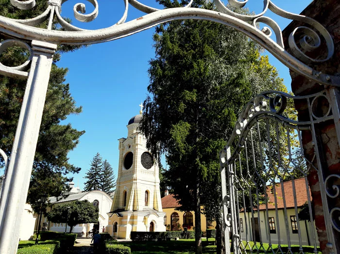

Top three places to visit in Kragujevac
Old church
Located on the right bank of the Lepenica River, the Old Church was built in 1818 with its interior decorated between 1818 and 1822. The church is a historic spot as the First Serbian Constitution was proclaimed in its courtyard.
The First Grammar School of Kragujevac

A high school founded in 1833. The school is the oldest Serbian high school south of the Sava - Danube line.
Šumarice memorial park

A site of the execution of an estimated 2,800 men and boys of the town by the German occupation forces on October 21, 1941, during World War II (Kragujevac massacre). Among the dead were hundreds of high school students.